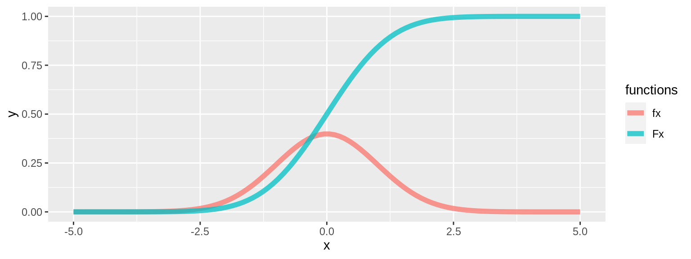
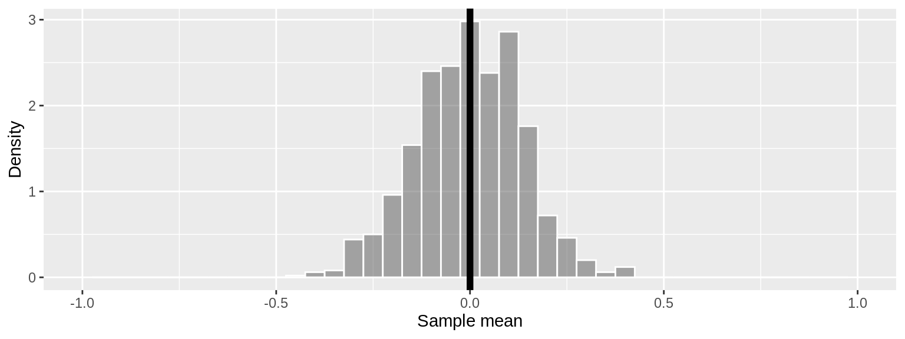

確率基礎
確率的現象
確率的現象は、とりうる選択肢の中からどれが実現するのか推測できない現象のことです。例えば、次のようなものが該当します。
- 測定ノイズ: 同じプロトコルで実験を行ってもシステムノイズや測定ノイズによって必ず同じ測定値が得られることはありません
- 遺伝, 進化: 生殖によって生まれる子は父とも母とも異なる性質を持ちます、さらに兄弟でも全く異なります
- 分子の動き: 分子は空間上をランダムウォークします、これによって化学反応系に偶発的な要素が生まれ揺らぎが発生します
確率空間
定義
確率空間は標本空間 \(\Omega\) , 事象空間 \(\mathcal{E}\) , 確率測度 \(P\) の三つ組 \((\Omega, \mathcal{E}, P)\) で定義されます。図 1
- 標本空間 \(\Omega\) : 個別の確率的現象 \(\omega \in \Omega\) (標本点, 根元事象)の集合です。標本空間には起こりうる全ての確率的現象が含まれており、各確率的現象は互いに排他的です。
- ex) サイコロの目の標本空間: \(\Omega = \{ 1, 2, 3, 4, 5, 6 \}\)
- 排他的でないとは、例えば例のサイコロの目の標本空間が次のように1の要素を二つ以上もつことは無いということです。
- \(\Omega = \{ 1, 1, 2, 3, 4, 5, 6 \}\) ← これは標本空間ではない
- 事象空間 \(\mathcal{E}\) : 各要素 \(e \in \mathcal{E}\) 標本空間の部分集合 \(e \subseteq \Omega\) となる集合です。この各要素は事象と呼びます。事象空間には空集合 \(\varnothing\) 1と全体集合 \(\Omega\) も含みます。事象空間は可算個の集合演算で閉じているため、 \(\sigma\) -代数の構造を持ちます(詳細は割愛しますが、 \(\sigma\) -代数であることによって集合の長さや面積などの大きさを測ることができる、即ち確率値を求めることができます)。事象空間の要素数は \(|\mathcal{E}| = 2^{|\Omega|}\)となります。
- ex) サイコロの目が偶数となる事象: \(e = \{ 2, 4, 6 \}\)
- サイコロの目の事象空間の要素数は \(2^{|\{ 1, 2, 3, 4, 5, 6 \}|} = 2^{6} = 64\)
- 確率測度 \(P\) : 確率測度は写像 \(P \colon \mathcal{E} \to [0, 1] \subset \mathbb{R}\) です。一つの事象 \(e\) に対して確率値 \(P(e) \in [0, 1]\) が定まります。特に、\(P(\varnothing) = 0\) , \(P(\Omega) = 1\)です。また、確率測度は各事象が互いに排反であるとき 式 1 の(3)を満たします。
- ex) サイコロの目が偶数となる確率: \(P( \{ 2, 4, 6 \}) = \frac{1}{2}\)
Kolmogorov(コルモゴロブ)の公理
確率測度 \(P\) が満たす、次の3つからなる Kolmogorovの公理 式 1 があります。これは前述した標本空間、事象空間、確率測度の記述と同等の意味です。
\[ \begin{split} &(1) \ e_{1}, e_{2}, e_{3} \in \mathcal{E} \Rightarrow e_{1} \cup e_{2} \cup e_{3}, e_{1} \cap e_{2} \cap e_{3}, e_{1}^{c}, \varnothing, \Omega \in \mathcal{E} \\[1em] &(2) \ \forall e \in \mathcal{E}, 0 \leqq P(e) \leqq 1 \ (特に P(\varnothing) = 0, \ P(\Omega) = 1) \\[1em] &(3) \ e_{1}, e_{2} \in \mathcal{E}, e_{1} \cap e_{2} = \varnothing \ \mbox{if} \ i \ne j \Rightarrow P(\cup_{i} e_{i}) = \sum_{i} P(e_{i}) \end{split} \tag{1}\]
特に、実直線 \(\mathbb{R}\) が標本空間であるとき、事象空間にはボレル集合族 \(\mathcal{B}\) が用いられます。こちらも詳細な解説は割愛しますが、これによって任意の開区間、閉区間、点、和集合、そして積集合に対して確率を計算できます。
確率変数
定義
確率変数 \(X\) 2 は 式 2 の条件を満たす写像として定義されます。 \[ X \colon \Omega \rightarrow \mathbb{R}, \exists X^{-1}(b) \in \mathcal{E} \ (\mbox{for any} \ b \in \mathcal{B}) \tag{2}\]
複雑になったように見えますが、この確率変数 \(X\) を考えることで解析したい確率的現象にバリエーションを持たせることができます。例えば、 \(b = [0, 1] \in \mathcal{B}\) をとると、 式 2 より \(X^{-1}([0, 1]) = \{ \omega \in \Omega | 0 \leqq X(\omega) \leqq 1 \} \in \mathcal{E}\) なる \(X^{-1}\) が存在し、確率値 \(P(0 \leqq X \leqq 1)\) が計算できます。これは任意の区間や点で同様に確率値を求めることもできます(ex: \(P(X = 0)\) )。
なので、確率空間 \((\Omega, \mathcal{E}, P)\) に対して確率変数 \(X\) が与えられたとき、対応する確率空間 \((\Omega, \mathcal{B}, P_{X})\) が定まります。この \(P_{X}\)を確率分布といい、確率変数は確率分布 \(P_{X}\) に従います( \(X \thicksim P_{X}\) )。図 1
graph LR
Sample[標本空間]
Borel[ボレル集合族]
Event[事象空間]
Probability[確率測度]
Sample -.->|確率変数| Borel
Borel -.->|確率変数の逆像| Event
Event -->|写像| Probability
subgraph 確率空間
Sample
Event
Probability
end
※主要な確率分布は確率分布で扱います。
例
例えば、サイコロを一回振って出た目を標本空間\(\{ 1, 2, 3, 4, 5, 6 \} \in \Omega\)として考えるとき、次のような確率変数をとることができます。
- サイコロの目をそのままとった確率変数: \(X_{id} = id(\omega)\)、このときの確率分布は
\[ P_{X}(X_{id} = i) = \frac{1}{6} \ (i = 1, \cdots , 6) \]
- サイコロの目の偶数を0, 奇数を1としたときの確率分布: \(X_{odd} = \omega \ mod \ 2\)、このときの確率分布は
\[ P_{X}(X_{odd} = i) = \frac{1}{2} \ (i = 0, 1) \]
- サイコロの目をコサイン変換したときの確率分布: \(X_{cos} = \cos(\frac{\pi \omega}{4})\)、このときの確率分布は
\[ P_{X}(X_{cos} = i) = \left\{ \begin{align} \frac{1}{3} \ &(i = -1) \\ \frac{1}{2} \ &(i = 0) \\ \frac{1}{6} \ &(i = 1) \end{align} \right. \]
確率密度関数・分布関数
確率密度関数は \(X \thicksim P_{X}\) に対して 式 3 を満たす関数 \(f_{X}\) です。(図 2)
\[ P_{X}(X \in b) = \int_{b} f_{X}(x) dx \ (\mbox{for any} \ b \in \mathcal{B} \tag{3}\]
これは、事象 \(b\) の範囲で \(f_{X}\) を積分すると、事象 \(b\) の確率値が求まることを表しています。
また、確率変数 \(X\) が実測値 \(x\) 以下になる確率として定義される関数を分布関数 \(F_{X}\) といいます 式 4 。(図 2)
\[ P_{X}(X \leqq x) = P_{X}([- \infty, x]) = F_{X}(x) \tag{4}\]
分布関数 \(F_{X}\) は次の性質を持ちます。
- \(x\) に対して広義単調増加関数
- \(F_{X}(- \infty) = 0, F_{X}(\infty) = 1\)
- \(\forall x_{1}, x_{2} \in b, P_{X}(x_{1} \leqq X \leqq x_2) = F_{X}(x_{2}) - F_{X}(x_{1})\)
- \(f_{X}(x) = \frac{\partial F_{X}}{\partial x}(x)\)
コード
x <- seq(-5, 5, length=100)
f_x <- dnorm(x)
F_x <- pnorm(x)
data = data.frame(list(x = x, fx = f_x, Fx = F_x)) |>
as_tibble() |>
pivot_longer(cols = c(fx, Fx), names_to = "functions")
g <- ggplot(data = data, mapping = aes(x = x, y = value, colour = functions)) +
geom_line(linewidth = 2, alpha = 0.75) +
labs(x = "x", y = "y")
plot(g)
同時確率
同時確率密度関数
同時確率とは、いくつかの事象 \(\{ e_{1}, \cdots, e_{n} \}\) の積集合の確率 \(P(e_{1}, \cdots, e_{n}) \coloneqq P(e_{1} \cap \cdots \cap e_{n})\)です。
同時確率密度関数 \(f_{XY}\) は、確率変数 \(X, Y\) に対して、 式 5 で定義される関数です。
\[ P((X, Y) \in I \times J) = \int \int_{(x, y) \in I \times J} f_{XY}(x, y) dx dy \ (\mbox{for any} \ I, J \subset \mathbb{R}^{2}) \tag{5}\]
周辺分布
同時確率密度関数 \(f_{XY}\) に対して、確率変数 \(Y\) がとりうる全ての値の総和をとる(式 6)ことを周辺化といいます。このとき、周辺化された関数 \(f_{X}\) は確率変数 \(X\) の確率密度関数そのものです。
\[ \int^{\infty}_{- \infty} f_{XY}(x, y) dx = f_{X}(x) \tag{6}\]
条件付き確率分布
事象 \(e_{1}, e_{2}\)について、事象 \(e_{2}\) が実現する条件下での事象 \(e_{1}\) の条件付き確率 \(P(e_{1} | e_{2})\) は 式 7 で定義されます。
\[ P(e_{1} | e_{2}) = \frac{P(e_{1} \cap e_{2})}{P(e_{2})} \tag{7}\]
特に、確率変数 \(X, Y\)について、 \(Y=y\) のもとでの確率変数 \(X\) の条件付き確率密度関数 \(f_{X | Y=y}\) を 式 8 で定義します(一般的な記号として\(p(x | y)\) と表記します)。
\[ p(x | y) = f_{X | Y=y} = \frac{f_{XY}(x, y)}{f_{Y}(y)} \tag{8}\]
\(p(x | y)\)は次のような性質を持ちます。
- \(p(x | y) \geqq 0\)
- \(\int^{\infty}_{- \infty} p(x | y) dx = 1\)
例えば、サイコロの出た目が偶数である( \(Y = y\) )という条件のもとで、出た目が4以上になる( \(X\) )条件付き確率は次のように計算できます。
\[ p(x | y) = \frac{\frac{1}{6} + \frac{1}{6}}{\frac{1}{6} + \frac{1}{6} + \frac{1}{6}} = \frac{2}{3} \]
また、式 8 より、同時確率密度関数は 式 9 のように書くことができます。
\[ f_{XY} = f_{X | Y=y} f_{Y} \ (p(x, y) = p(x | y) p(y)) \tag{9}\]
統計的独立
二つの事象 \(e_{1}, e_{2}\) が統計的独立とは、 \(P(e_{1}, e_{2}) = P(e_{1}) P(e_{2})\) が成り立つことです。
特に、確率変数 \(X, Y\) について \(X\) と \(Y\) が統計的独立とは 式 10 が成り立つことをいいます。
\[ \forall b_{1}, b_{2} \in \mathcal{B}, P(X \in b_{1}, Y \in b_{2}) = P(X \in b_{1}) P(Y \in b_{2}) \tag{10}\]
確率変数 \(X\) と \(Y\) が統計的独立であるとき、 \(p(x | y) = p(x)\) が成り立ちます。これは、確率変数 \(Y\) がどんな値をとろうとも \(X\) の確率分布 \(P_{X}\) には影響を与えないことを意味しています。
期待値
期待値
確率変数 \(X \thicksim P_{X}\) について、その期待値 \(E(X)\)は 式 11 で定義されます。期待値は \(X\) からランダムサンプリングされたデータの平均的な値を示します。
\[ E(X) = \int^{\infty}_{- \infty} x f_{X}(x) dx \tag{11}\]
期待値 \(E(X)\)は次の性質を持ちます。
- \(E(\sum^{n}_{i=1} X_{i}) = \sum^{n}_{i=1} E(X_{i})\)
- \(a, b\) が定数のとき、\(E(a X + b) = a E(X) + b\)
- \(X, Y\) が統計的独立のとき、 \(E(X Y) = E(X) E(Y)\)
- \(\phi \colon X \rightarrow \mathbb{R}\) なる関数が存在するとき3、 \(E(\phi(X)) = \int^{\infty}_{- \infty} \phi(x) f_{X}(x) dx\)
また、確率変数 \(X, Y\) について、\(Y = y\) のもとでの条件付き期待値 \(E(X | Y=y)\) は 式 12 で定義されます4。
\[ \begin{split} E(X | Y=y) &= \int^{\infty}_{- \infty} x f_{X}(x | y) dx \\ &= \frac{1}{f_Y(y)} \int^{\infty}_{- \infty} x f_{XY}(x, y) dx \end{split} \tag{12}\]
※ 式 8 を使用しました。
分散・共分散
分散
確率変数 \(X\) の期待値を \(\mu = E(X)\) とするとき、 \(X\) の分散 V(X) は 式 13 で定義されます。分散は \(X\) がランダムサンプリングするときにどれほどばらつきがあるか、即ち確率分布の広がりの尺度を与えます 5 6。
\[ \begin{split} V(X) &= E((X - \mu)^{2}) \\ &= \int^{\infty}_{- \infty} (x - \mu) f_{X}(x) dx \end{split} \tag{13}\]
分散の平方根 \(\sigma = \sqrt{V(X)}\) を標準偏差といいます。標準偏差は期待値を単位が揃っているので加算、減算で \(X\) から得られたデータの大まかな広がりを表すことができます。
また、分散 \(V(X)\)は次の性質を持ちます。
- \(a, b\) が定数のとき、\(V(a X + b) = a^{2} V(X)\)
- \(V(X) = E(X^{2}) - E(X)^{2}\)
- \(X, Y\) が統計的独立のとき、 \(V(X + Y) = V(X) + V(Y)\)
共分散
確率変数 \(X, Y\) の期待値をそれぞれ \(\mu_{X}, \mu_{Y}\)とするとき、 \(X, Y\) の共分散 \(C(X, Y)\) を 式 14 で定義します。これは確率変数間の相関の程度を表す指標で、共分散と \(X = x, Y = y\) の関係性は次のようになります。
- \(C(X, Y) > 0\) のとき、 \(x\) が大きな値をとるときに同時に観測された \(y\) も大きな値をとる傾向がある
- \(C(X, Y) < 0\) のとき、 \(x\) が大きな値をとるときに同時に観測された \(y\) は小さな値をとる傾向がある
- \(C(X, Y) = 0\) のとき、 \(x\) が大きな値をとるときに同時に観測された \(y\) は大きくも小さくもなる傾向がない
\[ \begin{split} C(X, Y) &= E(XY) - E(X)E(Y) \\ &= E((X - \mu_{X})(Y - \mu_{Y})) \end{split} \tag{14}\]
また、共分散 \(C(X, Y)\) は次の性質を持ちます。
- \(C(X, X) = V(X)\)
- \(a, b, c, d\) が定数のとき、\(C(a X + b, c Y + d) = a c C(X, y)\)
- \(X, Y\) が統計的独立ならば \(C(X, Y) = 0\) (また逆は偽であることに注意)
- \(V(X + Y) = V(X) + V(Y) + 2 C(X, Y)\)
確率変数を要素に持つベクトル \(\mathbb{X} = (X_{1}, \cdots, X_{m})^{T}\) に対して、第 \((i, j)\) 成分が \(C(X_{i}, X_{y})\) で与えられる \((m \times m)\) 行列 \(\mathbb{V}(\mathbb{X})\) を分散共分散行列を呼びます(ここで、 \(\mu = E(\mathbb{X})\) です)。この分散共分散行列は半正定値実対象行列です。
\[ \begin{split} \mathbb{V}(\mathbb{X}) = E((\mathbb{X} - \mu)(\mathbb{X} - \mu)^{T}) \\ [\mathbb{V}(\mathbb(X))]_{ij} = C(X_{i}, X_{y}) \end{split} \]
相関係数
確率変数 \(X, Y\)が \(V(X) > 0, V(Y) > 0\)を満たすとき、相関係数 \(\rho(X, Y)\) 式 15 で定義されます 7。相関係数は二変数間の線形的な関係の尺度を与えます 表 1。
\[ \rho(X, Y) = \frac{C(X, Y)}{\sqrt{V(X)V(Y)}} \tag{15}\]
相関係数は次の性質を持ちます。
- \(-1 \leqq \rho(X, Y) \leqq 1\)
- 特に、 \(\rho(X, Y) = \pm 1\)のとき、 \(\frac{X - E(X)}{\sqrt{V(X)}} \mp \frac{Y - E(Y)}{\sqrt{V(Y)}} = 0\) (複合同順)
また、相関係数による尺度は明確に決まっていませんが、次の基準をよく見ます。
| 相関係数 | 解釈 |
|---|---|
| \(-1.0 \leqq \rho \leqq -0.7\) | 負の強相関 |
| \(-0.7 \leqq \rho \leqq -0.4\) | 負の相関 |
| \(-0.4 \leqq \rho \leqq -0.2\) | 負の弱相関 |
| \(-0.2 \leqq \rho \leqq 0.2\) | 無相関 |
| \(0.2 \leqq \rho \leqq 0.4\) | 正の弱相関 |
| \(0.4 \leqq \rho \leqq 0.7\) | 正の相関 |
| \(0.7 \leqq \rho \leqq 1.0\) | 正の強相関 |
標本からの推定
推定値
\(X \thicksim P_{X}\)なる確率変数から得られた標本の集合 \(\{ x_{i} | i = 1, \cdots, n \}\) に対して、確率分布の期待値の推定値である標本平均 \(\bar{x}\) 式 16 と分散の推定値である標本分散 \(s^{2}\) 式 17 が定義されます。また、 \(s = \sqrt{s^{2}}\) を標本標準偏差と定義します。
\[ \bar{x} = \frac{1}{n} \sum^{n}_{i = 1} x_{i} \tag{16}\]
\[ s^{2} = \frac{1}{n - 1} \sum^{n}_{i = 1} (x_{i} - \bar{x})^{2} \tag{17}\]
加えて、 \((X, Y) ~ P\) なる確率変数から得られたペアの標本の集合 \(\{ (x_{i}, y_{i}) | i = 1, \cdots, n \}\) に対して、共分散の推定値である標本共分散 \(c_{XY}\) 式 18 と相関係数の推定値である標本相関係数 \(r_{XY}\) 式 19 が定義されます。
\[ c_{XY} = \frac{1}{n-1} \sum^{n}_{i = 1} (x_{i} - \bar{x}) (y_{i} - \bar{y}) \tag{18}\]
\[ r_{XY} = \frac{c_{XY}}{s_{X} s_{Y}} \tag{19}\]
点推定・標本変量
真の確率分布が既知であるが、その分布のあるパラメータ(母数) \(\theta\) が未知であるとき、標本から適当な値 \(\hat{\theta}_{n}(x_{1}, \cdots, x_{n})\) を計算し、この値を \(\theta\) の推定値とする。点推定法があります。例えば、母平均 \(\mu\) を標本平均 \(\hat{\mu} \equiv \bar{x}\) 式 16 で推定するのは母数 \(\mu\) の \(\bar{x}\) による点推定といえます。図 3
graph LR
Population([真の確率分布])
Sample[(標本)]
Parameter[母数]
Population ==>|抽出| Sample
Sample -->|推定| Parameter
ここで、実際に得られる推定値 \(\hat{\theta}_{n}\) は必ず母数 \(\theta\) と一致することはなく、ある程度のばらつきをもって分布しているある変量の一標本として得られたものであることに注意が必要です 図 4 。このある変量がどんな分布に従っているかを知ることは推定値を位置づけるうえでとても重要です。
コード
n <- 50
iter <- 1000
sample <- matrix(rnorm(n * iter), nrow=iter)
data = data.frame(sample=rowMeans(sample)) |>
as_tibble()
g <- ggplot(data = data, mapping = aes(x = sample)) +
geom_histogram(
aes(y=..density..), binwidth = 0.05, color="white", alpha=0.5
) +
geom_vline(xintercept=0, size=2) +
scale_x_continuous(limits = c(-1, 1)) +
labs(x = "Sample mean", y = "Density")
plot(g)
そこで、標準の集団 \(\{ x_{i} | i = 1, \cdots n \}\) を実測値とする、真の確率分布に従い互いに統計的独立な確率変数の組 \((X_{1}, \cdots, X_{n})\) を考えます。これは標本変量と呼びます。この標本変量から作られる確率変数 \(\bar{X}\) 式 20 を標本変量平均といいます。標本平均 \(\bar{x}\) は標本変量平均の実測値となります。同様に標本変量から標本変量分散(不偏分散) \(S^{2}\) 式 21 を定義することができます。
\[ \bar{X} = \frac{X_{1} + \cdots + X_{n}}{n} \tag{20}\]
\[ S^{2} = \frac{1}{n - 1} \sum^{n}_{i = 1} (X_{i} - \bar{X})^{2} \tag{21}\]
標本変量平均 \(\bar{X}\) と不偏分散 \(S^{2}\) は以下の性質をもちます(ただし、母平均を \(\mu\), 母分散を \(\sigma^{2}\) としました)。ここで重要なのは、標本変量平均および不変分散の期待値が母平均および母分散と一致することです。これは、推定値の不偏性、即ち推定値が母平均および母分散を表現しうることを表しています。
- \(E(\bar{X}) = \mu\)
- \(V(\bar{X}) = \frac{\sigma^{2}}{n}\)
- \(E(S^{2}) = \sigma^{2}\)
上記のように標本変量を導入することでさまざまな母数 \(\theta\) の推定値 \(\hat{\theta}_{n}\) を評価することができます。推定値がきちんと真の確率分布の母数を表現しうるならば、母数の周りに分布していることが望まれます。このような推定値 \(\hat{\theta}_{n}\) は 式 22 が成り立ち、不偏推定量と呼ばれます 8。
\[ E(\hat{\theta}_{n}) = \theta \tag{22}\]
留意すべきなのは、全ての母数に対して不偏推定量が存在するわけではないということです。例えば、上記の標本平均、標本分散(標本標準偏差)、標本共分散は不偏推定量ですが、標本相関係数は一般には不偏推定量ではないことが明らかになっています。
注釈
- このとき零事象となります。
- 離散か連続かで記号や名前が変わることがありますが、ここでは連続の方で書いていきます(離散の場合もおおよその考え方は同じです)。
- 一般的にはBaire関数をとります。
- これを \(y\) の関数とみて、 \(X\) の \(Y\) に対する回帰関数と呼ぶことがあります。
- \(V(X) = 0\) となる場合はランダムサンプリングするたびに \(x = \mu\) が得られます。このような確率変数は退化分布に従い( \(X \thicksim Deg(\mu)\) )、定数確率変数と呼びます。
- 平均、分散から導かれる確率論における重要な性質としてチェビシェフの不等式があります。
- ここの定義はピアソンの相関係数です。
- 不偏性に加えて最適な推定量の条件として、有効性・充足性・一致性があります。